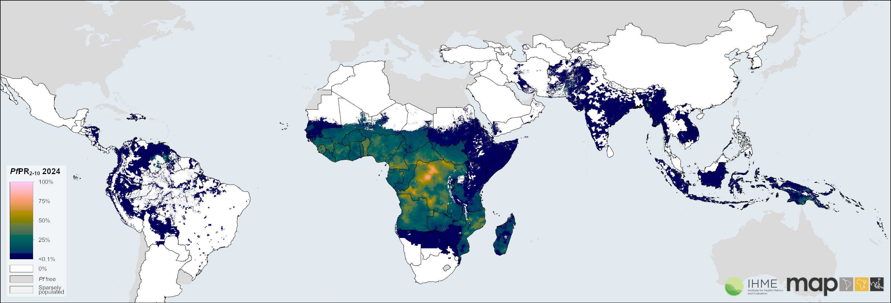
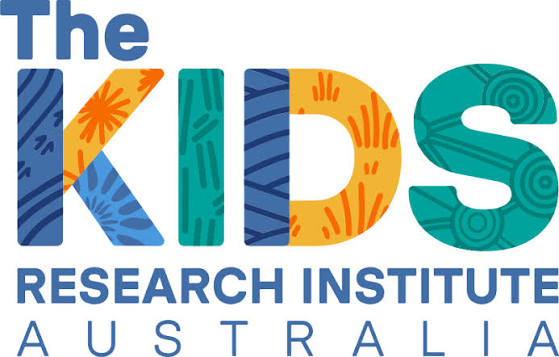

Geospatial modelling for public health applications
An intensive training programme for statisticians and public health professionals in R programming, spatial data analysis, Bayesian geostatistical modelling, and applied health data science.
Applications open now for the next cohort
Three phases from application to lasting impact
A structured pathway from selection through training to skills you keep building on afterwards.
1. Apply
Submit your details, take a short knowledge check, and complete your application with a CV and motivation statement.
2. Train
Selected participants join an intensive workshop with hands-on practicals in R, INLA and Bayesian geostatistics — taught by MAP scientists.
3. Apply the skills
Take modern geospatial methods back to your own research — alumni have gone on to publish papers building on skills learned in the programme.
Taught by the scientists producing WHO's malaria estimates.
Run by the MAP Project team, this programme brings together researchers, students and practitioners to strengthen skills in Bayesian geostatistical modelling for real-world public-health applications.
MAP is a designated WHO Collaborating Centre in Geospatial Disease Modelling. You'll learn the exact methods used to inform the World Malaria Report and the Global Burden of Disease study — from the people producing that work.
sf, terra and friends.
Modelled malaria risk across Africa
Every cohort works with real spatial data. The same Bayesian geostatistical methods taught in the programme are what produce risk surfaces like this one.

Ready to apply?
Applications are now open for the next cohort. Review the details, then submit through the portal.
Apply NowIn Partnership With
